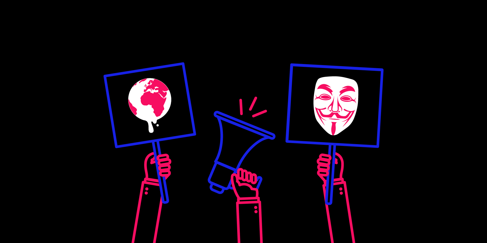

HACKTIVISM

¿Qué es el Hacktivismo?
El hacktivismo ocurre cuando los activistas políticos o sociales utilizan tecnología
informática
para hacer una declaración que respalda una de sus causas. En la mayoría de los casos se
enfoca
en objetivos gubernamentales o corporativos, pero puede incluir cualquier institución
significativa.
"Hacktivism" es la combinación de hacking
y activism.
Conceptos Clave
Información basada en Fortinet Cyber Glossary
Objetivos del Hacktivismo
Los hacktivistas apuntan principalmente a gobiernos y corporaciones que consideran corruptos o que violan derechos humanos. Sus acciones buscan visibilizar causas sociales y políticas ante la opinión pública global.
¿Es Ilegal?
La mayoría de actividades hacktivistas son ilegales, incluso si el activista considera sus acciones moralmente justificadas. El acceso no autorizado a sistemas está penado en casi todos los países.
Ataques DDoS
Los ataques de Denegación de Servicio Distribuido inundan un servidor con tráfico hasta dejarlo inaccesible. Son usados para silenciar sitios de organizaciones que el grupo considera dañinas para la sociedad.
Doxing
Consiste en investigar y publicar información privada de individuos en internet. Los hacktivistas lo usan para exponer a figuras que consideran responsables de injusticias, desde funcionarios corruptos hasta criminales.
Desfiguración Web
Implica alterar el contenido visual de un sitio web sin autorización para mostrar mensajes políticos. Es el equivalente digital del grafiti callejero y una de las formas más visibles de protesta hacktivista.
Anonymous
El grupo hacktivista más conocido del mundo. Sin liderazgo centralizado, opera como un colectivo descentralizado. Ha actuado contra gobiernos, corporaciones y grupos extremistas bajo el lema "somos legión".
Tipos de Hacktivismo
Clasificación según Fortinet
01 — Ataques DDoS
Sobrecargan servidores con tráfico masivo para dejarlos fuera de línea temporalmente.
02 — Filtraciones
Acceso y publicación de documentos confidenciales para exponer corrupción o injusticias.
03 — Desfiguración Web
Alteración de páginas web para mostrar mensajes o reclamos del grupo hacktivista.
04 — Doxing
Publicación de datos personales de individuos considerados responsables de daños sociales.
05 — Software Anónimo
Desarrollo de herramientas para evadir la censura gubernamental y proteger la privacidad.
06 — Redirección de Sitios
Interceptar o redirigir el tráfico web hacia contenido alternativo con mensajes activistas.